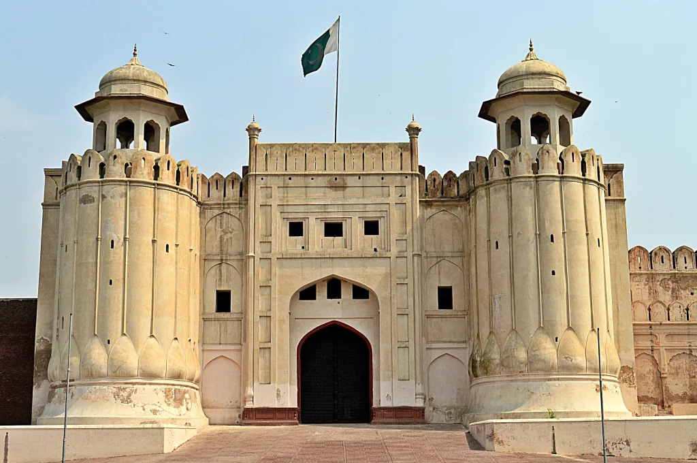

The Heart of Pakistan :
Lahore is Pakistan's second largest city after Karachi, and the capital of the north-eastern Punjab province. It is widely considered the country's cultural capital. The heart of Lahore is the Walled or Inner City, a very densely populated area of about one square kilometre. Founded in legendary times, and a cultural centre for over a thousand years, Lahore has many attractions for the tourist. The Mughal and Sikh legacy survives in the Lahore Fort, Badshahi Mosque and Gurdwara, the Mall is lined with colonial-gothic buildings from the British Raj, and the suburbs of Gulberg and Defence feature palatial mansions and trendy shopping districts

Legend has it that it was founded about 4,000 years ago by Loh, son of Rama, the hero of the Hindu epic, the Ramayana. Reminiscent of its hoary past are the remains of a subterranean temple attributed to Rama, in the northern part of the Royal Fort. Lahore is at least 2,000 years old. After Islam came to South Asia, it became a centre of learning, and attracted some of the region's greatest mystics, writers and artists. The people of Lahore, when they want to emphasize the uniqueness of their town say "Lahore, Lahore aye" (Lahore is Lahore). Lahore is the city of poets, artists and (until 2007) the centre of the Pakistani film industry. It has the largest number of educational institutions in the country and some of the finest gardens in the continent. Apart from being the cultural and academic centre of the country, Lahore has the finest Mughal architecture in Pakistan. For more than 200 years (beginning from about 1524), Lahore was a thriving cultural centre of the Mughal Empire, and Mughal emperors beautified Lahore, with palaces, gardens and mosques.
Hiuen Tsang, the famous 7th century Chinese pilgrim, gave a vivid description of Lahore. Lying on the main trade and invasion routes to South Asia, Lahore has been ruled and plundered by a number of dynasties. Muslim rule began here when Qutub-ud-din Aibak was crowned in Lahore in 1206 and became the first Muslim Sultan of the Subcontinent. Lahore waxed and waned in importance during the Sultanate. However, it touched the zenith of its glory during the Mughal rule from 1524 to 1752. The Mughals, who were famous as builders, gave Lahore some of its finest architectural monuments, many of which today are no longer. Lahore was Akbar's capital from 1584 to 1598. He built the massive Lahore Fort on the foundations of a previous fort, and enclosed the city within a red brick wall boasting 12 gates. Jahangir and Shah Jahan (who was born in Lahore) extended the fort, built palaces and tombs, and laid out gardens. Jahangir loved the city, and he and his wife Noor Jahan are buried at Shahdara on the outskirts of Lahore. Aurangzeb (1658-1707) gave Lahore its most famous monuments: the Badshahi Masjid (Royal Mosque) and the Alamgiri gateway to the fort.

The British, following their invasion of Lahore in 1849, added a great many buildings in “Mughal-Gothic” style as well as bungalows and gardens. Early on, the British tended to build workaday structures in sites like the Fort, though later they did start to make an effort to preserve some ancient buildings. The Lahore Cantonment, the British residential district of wide, tree-lined streets and white bungalows set in large, shaded gardens, is the prettiest cantonment in Pakistan. Since Independence in 1947, Lahore has expanded rapidly as the capital of Pakistani Punjab.
All this makes Lahore a truly rewarding experience. The buildings, the roads, the trees and the gardens, in fact the very air of Lahore in enough to set the mind spinning in admiration. A poet has written about this phenomenon one experiences in the environs of Lahore. When the wind whistles through the tall trees, when the twilight floods the beautiful face of the Fort, when the silent canal lights up to herald the end of another chapter in history, the Ravi is absorbed in harmony, mist fills the ancient streets, and the havelis come alive with strains of classical music, the spirit of Lahore pervades even the hardiest of souls.
Made with By Mr.Haris
Leave a Comment